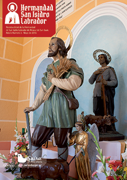

I Concurso de arado y manejo de remolqueTexto de: Yolanda Gallego MonederoCereales Angora, junto con la Hermandad de San Isidro de Alcázar de San Juan, promueven este año el Primer Concurso de arado y manejo de remolque. De todos es sabido, (de todos los agricultores, al menos) la importancia de un buen manejo del tractor y el remolque en la mejora de la cosecha. La labranza con tractor y arados mejora las condiciones del suelo para evitar charcos de agua, o por el contrario, que se filtre la misma del modo más homogéneo posible. Los elementos que influyen en la obtención de una buena cosecha, si nos basamos en el suelo, son la humedad, la temperatura, el aireado y la estructura. Sin duda alguna, un buen arado contribuye a mejorar la cosecha, pues ayuda a la plantación a que estos elementos de los que hablamos, hagan que se den las condiciones óptimas para que la planta obtenga de la tierra el agua y los nutrientes necesarios para su correcto desarrollo. Breve historia del arado. La historia del arado se remonta a la Edad de los Metales, 3.500 años antes de Cristo. Las civilizaciones situadas entre los ríos Tigris y Éufrates en Oriente Medio fueron las primeras en utilizarlos, si bien, ni siquiera eran arados como tales, sino ramas de árboles con forma similar al arado, que posteriormente, serían construidos completamente de madera. Animales como bueyes, caballos, mulas y burros, e incluyo dromedarios, fueron usados como tiro de los primeros arados manuales. Los romanos añadieron una pieza de hierro al final del arado, que se introducía en la tierra, y ya en la Edad Media se añadieron cuchillas y rejas, y también unas ruedas, que facilitaban el trabajo en las duras tierras del centro y norte de Europa. En 1808 el inglés Robert Ransome construye un arado totalmente de hierro. En la década de 1830, el estadounidense John Deere construyó un arado con reja de acero. Posteriormente se fabricarían el arado con dos ruedas y asiento para el conductor y el arado de discos. En el siglo XX, la aparición de los primeros tractores a vapor, y posteriormente a gasolina, supusieron un gran avance en el sector agrario. Hoy en día en los países desarrollados, los arados tirados por tractores han sustituido a personas y animales de tiro. Concurso de Arado. Cereales Angora, mediante una estrecha colaboración con la Hermandad de San Isidro, por primera vez en Alcázar de San Juan, y haciéndolo coincidir con las fiestas en honor a nuestro patrón, promueve el primer concurso local de arado y manejo de remolque, que se llevará a cabo en las instalaciones de la empresa, en Carretera C-3107 km. 0,5 de Alcázar. La idea es darle a este trabajo agrícola la importancia que se merece, donde el buen tractorista maneja correctamente el tractor, y por tanto, los arados, para que los surcos en la tierra tengan la mayor eficiencia y causen los menos daños posibles a las plantaciones. Los premios consistirán en tres trofeos para los tres primero puestos y sendos lotes de productos típicos manchegos. |
 Revista San Isidro 2015  Revista San Isidro 2015 |
BREVE HISTORIA AGRÍCOLA Y GANADERA (2ª Parte)
En el Priorato de San Juan se tenía costumbre de prestar a los agricultores un tercio de los diezmos para la siembra.
En el Libro de Cuentas 1612-1628 folio 90 nos encontramos la siguiente reseña:
“Mas doce reales que pagó a Diego García de Siruela, vecino desta villa, ...
En el Priorato de San Juan se tenía costumbre de prestar a los agricultores un tercio de los diezmos para la siembra.
En el Libro de Cuentas 1612-1628 folio 90 nos encontramos la siguiente reseña:
“Mas doce reales que pagó a Diego García de Siruela, vecino desta villa, ...

EL HISTORIAL CAMPESINO
Fácil es señor doctor,
decir no bebas más vino
y que difícil que es
para el que nació campesino.
Yo que desde muy pequeño
dediqué mi vida entera
y en darle puse mi empeño,
rango, prestigio y solera..
Fácil es señor doctor,
decir no bebas más vino
y que difícil que es
para el que nació campesino.
Yo que desde muy pequeño
dediqué mi vida entera
y en darle puse mi empeño,
rango, prestigio y solera..
ALGUNOS MILAGROS DE SAN ISIDRO
No todos sabrán de la gran cantidad de milagros que se le atribuyen a San Isidro Labrador, muchos de ellos, post mortem. Cuatrocientos treinta y ocho milagros en total, de los cuales vamos a contar aquí los más conocidos.
No todos sabrán de la gran cantidad de milagros que se le atribuyen a San Isidro Labrador, muchos de ellos, post mortem. Cuatrocientos treinta y ocho milagros en total, de los cuales vamos a contar aquí los más conocidos.
SOLAMENTE HACE 50 AÑOS ...
Tuvo lugar una catástrofe climatológica en toda la zona de La Mancha. Un gran frente frío cruzó toda la Península dejando fuertes heladas y copiosas nevadas que hizo que durante varios días la nieve se quedara congelada sobre todos los cultivos de la zona.
En esos días, concretamente durante los días del 19 al 22 de Febrero de 1.965 ...
Tuvo lugar una catástrofe climatológica en toda la zona de La Mancha. Un gran frente frío cruzó toda la Península dejando fuertes heladas y copiosas nevadas que hizo que durante varios días la nieve se quedara congelada sobre todos los cultivos de la zona.
En esos días, concretamente durante los días del 19 al 22 de Febrero de 1.965 ...
Conoce el reglamento interno, los requisitos de acceso y pasa a formar parte de nuestra Hermandad.

| Teléfono: 683 122 794 Casa Parroquial de la Iglesia de San Francisco Plaza de San Francisco, s/n 13600 - Alcázar de San Juan (Ciudad Real) |
Síguenos en |